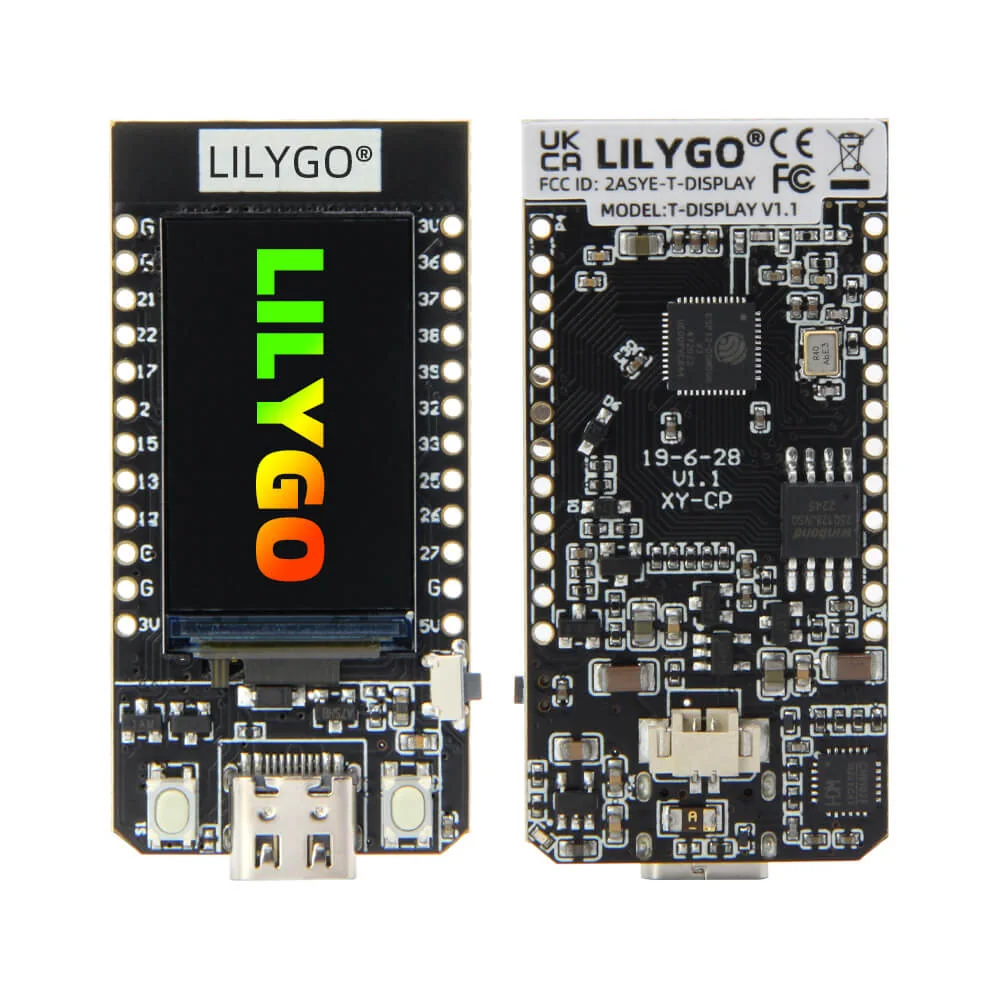

T-Display
LilyGO · LilyGO T-Display – ESP32 1.14" IPS dev board
T-Display is an 1.14" 135x240 IPS ESP32 display board by LilyGO based on the ESP32 with 4MB / 16MB (option) flash.
Features, ports & interfaces
- SPI display
- 4 MB flash
- Wi-Fi 4 (802.11 b/g/n, 2.4 GHz) – version from the ESP32 datasheet
- Bluetooth 4.2 BR/EDR (Classic) + BLE – version from the ESP32 datasheet
- USB-C
- Battery power detection
- Buttons: 2x user buttons
Specifications
| Parameter | Value | Source |
|---|---|---|
| Screen size | 1.14" | source |
| Resolution | 135x240 | source |
| Panel | IPS | source |
| Shape | Rectangular | |
| Display interface | SPI | source |
| Display driver | ST7789V | source |
| Touch | None | source |
| MCU / SoC | ESP32 (dual-core LX6) | source |
| MCU family | ESP32 | source |
| Flash | 4MB / 16MB (option) | source |
| Wi-Fi | Wi-Fi 802.11 b/g/n | source |
| Bluetooth | BT V4.2 + BLE | source |
| USB | USB Type-C (CH9102 USB-serial) | source |
| Category | LilyGO (T-series) | |
| Battery | Battery power detection | source |
| Buttons | 2x user buttons | source |
| Vendor | LilyGO |